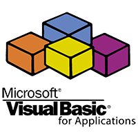

technologie, z jakich lubię korzystać
-
 - Arkusz kalkulacyjny produkowany przez firmę Microsoft dla systemów Windows, macOS, iOS i Android. Pierwsza wersja programu przeznaczona dla systemu Windows trafiła na rynek w roku 1987 i stała się przebojem. Postępujący sukces rynkowy programu sprawił, że w roku 1993 programy pakietu Microsoft Office zostały przeprojektowane tak, by przypominać wyglądem arkusz Excel. Od wersji 5.0 wydanej w 1993 roku program zawiera wbudowany język Visual Basic.
- Arkusz kalkulacyjny produkowany przez firmę Microsoft dla systemów Windows, macOS, iOS i Android. Pierwsza wersja programu przeznaczona dla systemu Windows trafiła na rynek w roku 1987 i stała się przebojem. Postępujący sukces rynkowy programu sprawił, że w roku 1993 programy pakietu Microsoft Office zostały przeprojektowane tak, by przypominać wyglądem arkusz Excel. Od wersji 5.0 wydanej w 1993 roku program zawiera wbudowany język Visual Basic. -
- Język programowania oparty na Visual Basicu (VB) zaimplementowany w aplikacjach pakietu Microsoft Office oraz kilku innych, jak na przykład AutoCAD i WordPerfect. Ta uproszczona wersja Visual Basica służy przede wszystkim do automatyzacji pracy z dokumentami, na przykład poprzez makropolecenia.
-
 - Strukturalny język zapytań używany do tworzenia, modyfikowania baz danych oraz do umieszczania i pobierania danych z baz danych. Język SQL jest językiem deklaratywnym. Decyzję o sposobie przechowywania i pobrania danych pozostawia się systemowi zarządzania bazą danych (DBMS).
- Strukturalny język zapytań używany do tworzenia, modyfikowania baz danych oraz do umieszczania i pobierania danych z baz danych. Język SQL jest językiem deklaratywnym. Decyzję o sposobie przechowywania i pobrania danych pozostawia się systemowi zarządzania bazą danych (DBMS). -
- współbieżny, oparty na klasach, obiektowy język programowania ogólnego zastosowania. Został stworzony przez grupę roboczą pod kierunkiem Jamesa Goslinga z firmy Sun Microsystems. Java jest językiem tworzenia programów źródłowych kompilowanych do kodu bajtowego, czyli postaci wykonywanej przez maszynę wirtualną. Język cechuje się silnym typowaniem. Jego podstawowe koncepcje zostały przejęte z języka Smalltalk (maszyna wirtualna, zarządzanie pamięcią) oraz z języka C++ (duża część składni i słów kluczowych).